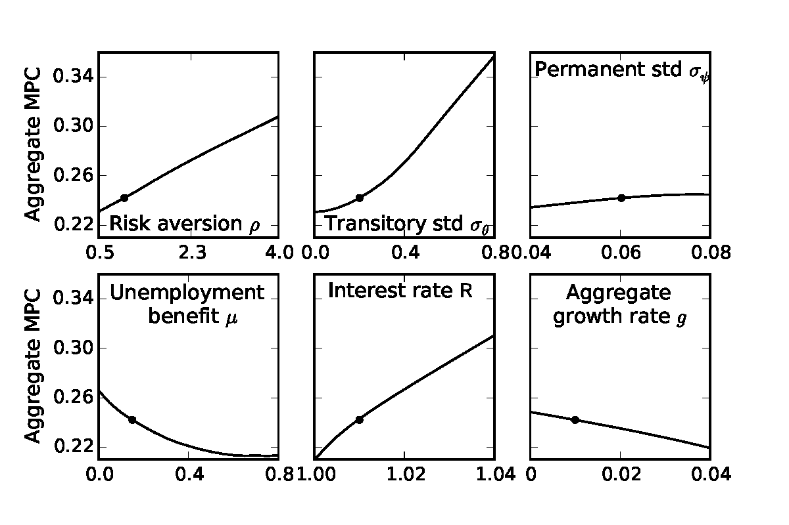
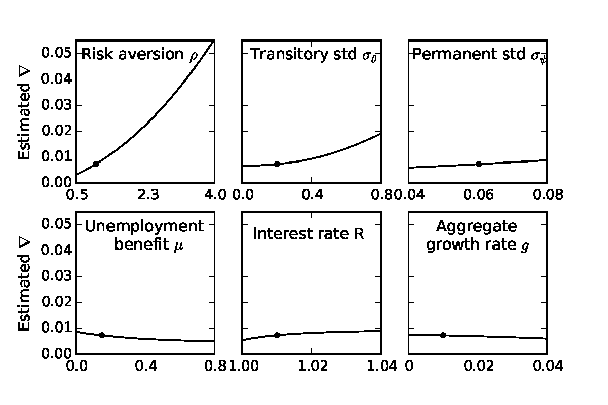

![1∕ρ − 1
(Rt-β)---𝔼[ψ---]//D-- < 1, (13)
Γ](cstwMPC17x.svg)
_____________________________________________________________________________________
Abstract
In a model calibrated to match micro- and macroeconomic evidence on household income
dynamics, we show that a modest degree of heterogeneity in household preferences or beliefs is
sufficient to match empirical measures of wealth inequality in the U.S. The hegerogeneity-augmented
model’s predictions are consistent with microeconomic evidence that suggests that the annual
marginal propensity to consume (MPC) is much larger than the roughly 0.04 implied by
commonly-used macroeconomic models (even ones including some heterogeneity). The high MPC
arises because many consumers hold little wealth despite having a strong precautionary motive. Our
model also plausibly predicts that the aggregate MPC can differ greatly depending on how the shock
is distributed across households (depending, e.g., on their wealth, or employment status).
Wealth Distribution, Marginal Propensity to Consume, Heterogeneity, Inequality
D12, D31, D91, E21
1 Carroll: Department of Economics, Johns Hopkins University, Baltimore, MD, http://econ.jhu.edu/people/ccarroll/, email: ccarroll@jhu.edu 2 Slacalek: DG Research, European Central Bank, 60640 Frankfurt am Main, Germany, http://www.slacalek.com/, email: jiri.slacalek@ecb.europa.eu 3 Tokuoka: Ministry of Finance, 3-1-1 Kasumigaseki, Chiyoda-ku, Tokyo 100-8940, Japan, email: kiichi.tokuoka@mof.go.jp 4 White: Department of Economics, University of Delaware, Newark, DE 19702, http://www.lerner.udel.edu/faculty-staff/matthew-n-white/, email: mnwecon@udel.edu
In capitalist economies, wealth is unevenly distributed. Recent waves of the triennial U.S. Survey of Consumer Finances, for example, have consistently found the top 1 percent of households holding about a third of total wealth, with the bottom 60 percent owning essentially no net wealth.2
Such inequality could matter for macroeconomics if households with different amounts of wealth respond differently to the same aggregate shock. Indeed, microeconomic studies (reviewed in section 2.2) have often found that the annual marginal propensity to consume out of one-time income shocks (henceforth, ‘the MPC’) is substantially larger for low-wealth than for high-wealth households. In the presence of such microeconomic heterogeneity, the aggregate size of, say, a fiscal shock is not sufficient to compute the shock’s effect on spending; that effect will depend on how the shock is distributed across categories of households with different MPCs.
To assess how much these considerations matter quantitatively, we solve a macroeconomic model with a household-specific income process that includes a fully permanent shock and a transitory shock.3 ,4 While inclusion of the permanent component improves the fit of the wealth distribution (as shown in Carroll, Slacalek, and Tokuoka (2015)), this ‘identical preferences and beliefs’ model still falls short of matching the degree of wealth inequality in the data, because wealth inequality greatly exceeds (permanent) income inequality. Consequently, we allow for the possibility that households differ in their preferences (like impatience, proxying for many characteristics including age, optimisim, and risk aversion) or, equivalently, that they differ in their beliefs about the path of future aggregate productivity growth. (Given the disagreement between leading growth experts like Gordon (2012) and Fernald and Jones (2014), differences in households’ views about future productivity growth cannot be fairly judged to reflect ignorance or irrationality, but could instead be characterized as reflecting inherent ‘optimism’ or ‘pessimism.’) We show that quite modest heterogeneity in preferences (or optimism/pessimism) is sufficient to allow the model to match the wealth distribution remarkably well.5
Within our simulated economy we investigate the aggregate MPC and its distribution across households. The aggregate MPC predicted by our model is large (compared to benchmark Representative Agent models) – around 0.2 – because many consumers in the model hold little wealth and have a strong precautionary motive. This value of the MPC is consistent with (but at the low end of) the extensive microeconomic evidence, whose range of credible estimates we characterize at being between 0.2 and 0.6. This finding sharply contrasts with the MPC of roughly 0.04 implied by the certainty-equivalent permanent income hypothesis and by commonly-used macroeconomic models (even ones including some heterogeneity, such as the baseline Krusell and Smith (1998) model), in which most consumers typically inhabit only the flat (low MPC) part of the consumption function.
In a further experiment, we recalibrate our model so that it matches the degree of inequality in liquid financial assets, rather than total net worth. Because the holdings of liquid financial assets are substantially more heavily concentrated close to zero than holdings of net worth, the model’s implied aggregate MPC then increases to roughly 0.4, well into the middle of the range of empirical estimates of the MPC. Consequently, the aggregate MPC in our models is an order of magnitude larger than in models in which households are well-insured and barely react to transitory shocks.
Our models also plausibly imply that the aggregate MPC can differ greatly depending on how the shock is distributed across households. For example, low-wealth and unemployed households have much larger spending propensities than high-wealth and employed ones.
Our main contribution is that we capture jointly the distribution of wealth and distribution of the MPCs in a tractable way using modest preference heterogeneity. More broadly, our analysis demonstrates the quantitative importance of household heterogeneity for macroeconomic dynamics. The implication of our model is that matching the wealth distribution is key for a model to reproduce a realistic distribution of spending propensities, or an aggregate MPC.
Ours is not the first paper to incorporate heterogeneity in impatience. Krusell and Smith (1998), for example, postulated that the discount factor takes one of three values and that agents anticipate that their discount factor might change between these values (which they interpreted as reflecting inheritance between dynastic generations with different preferences). While this ‘KS-Hetero’ model (as we call it in our comparisons below) also matches the wealth distribution better than their model without heterogeneity (‘KS’ below), it does not increase the aggregate MPC nearly enough to match the microeconomic evidence—only to around 0.10. In contrast to our preferred model, most households in the ‘KS-Hetero’ model inhabit the flat portion of the consumption function, where the MPC is low. Moreover, the consumption function in their model exhibits less concavity in the relevant parts of the wealth distribution.
We also demonstrate that the quantitative conclusions of our setup hold when we adopt a framework with overlapping generations of households with realistically calibrated life cycles. In particular, in the life-cycle setup the models with little impatience heterogeneity continue to match the wealth distribution similarly well. In addition, the life-cycle models imply a similar size of the aggregate MPC and its distribution across households as the perpetual youth models.
In the models with aggregate shocks, we can explicitly ask questions like “how does the aggregate MPC differ in a recession compared to an expansion” or even more complicated questions like “does the MPC for poor households change more than for rich households over the business cycle?” To address these questions, we compare the business-cycle implications of two alternative modeling treatments of aggregate shocks. In the first version, aggregate shocks follow the Friedmanesque structure of our microeconomic shocks– all shocks are either fully permanent or fully transitory. In the second version, the aggregate economy alternates between periods of boom and bust, as in Krusell and Smith (1998).
We show that neither the mean of the MPC nor the distribution of MPCs changes much when the economy switches from one state to the other.6 To the extent that either specification of aggregate shocks is a correct description of reality, the result is encouraging because it provides reason to hope that microeconomic empirical evidence about the MPC obtained during normal, nonrecessionary times may still provide a good guide to the effects of stimulus programs for policymakers confronting extreme circumstances like those of the Great Recession.7
The rest of the paper is structured as follows. The next section explains the relation of our paper’s modeling strategy to (some of) the vast related literature. Section 3 lays out two variants of the baseline, perpetual youth model—without and with heterogeneity in the rate of time preference—and explores how these models perform in capturing the degree of wealth inequality in the data. Section 4 compares the MPC’s in these models to those in the Krusell and Smith (1998) model and investigates how the aggregate MPC varies over the business cycle. Section 5 shows that the quantitative conclusions about the MPC carry over into the setup with overlapping generations, and section 6 concludes.
Our modeling framework builds on the heterogeneous-agents model of Krusell and Smith (1997, 1998). Following Carroll, Slacalek, and Tokuoka (2015), we accommodate transitory-and-permanent-shocks microeconomic income process that is a modern implementation of ideas dating back to Friedman (1957) (see section 3.1).
A large literature starting with Zeldes (1989) has studied life cycle models in which agents face permanent (or highly persistent) and transitory shocks; a recent example that reflects the state of the art is ?. For the most part, that literature has been focused on microeconomic questions like the patterns of consumption and saving (or, recently, inequality) over the life cycle, rather than traditional macroeconomic questions like the average MPC (though recent work by ?, discussed in detail below, does grapple with the MPC). Life cycle models of this kind are formidably complex, which probably explains why they have not (to the best of our knowledge) yet been embedded in a dynamic general equilibrium context like that of the Krusell and Smith (1998) type, which would permit the study of questions like how the MPC changes over the business cycle. However, in section 5 we present a life cycle model, which documents that our quantitative conclusions about the size of the MPC and its distribution across households continue to hold in a framework with overlapping generations.
A separate extensive literature has investigated various mechanisms (including preference heterogeneity, transmission of bequests and human capital across generations, entrepreneurship, and high earnings risk for the top earners) to match the empirical wealth distribution; see De Nardi (2015) for a recent review. Perhaps closest to our paper in modeling structure is the work of Castaneda, Diaz-Gimenez, and Rios-Rull (2003). That paper constructs a microeconomic income process with a degree of serial correlation and a structure for the transitory (but persistent) income shocks engineered to match some key facts about the cross-sectional distributions of income and wealth in microeconomic data. But the income process that those authors calibrated does not resemble the microeconomic evidence on income dynamics, because the extremely rich households are assumed to face unrealistically high probability (roughly 10 percent) of a very bad and persistent income shock. Further, Castaneda, Diaz-Gimenez, and Rios-Rull (2003) did not examine the implications of their model for the aggregate MPC, perhaps because the MPC in their setup depends on the distribution of the deviation of households’ actual incomes from their (identical) stationary level. That distribution, however, does not have an easily measurable empirical counterpart.8
One important difference between the benchmark version of our model and most of the prior literature is our incorporation of heterogeneous time preference rates as a way of matching the portion of wealth inequality that cannot be matched by the dispersion in permanent income. A first point to emphasize here is that we find that quite mild heterogeneity in impatience is sufficient to let the model capture the extreme dispersion in the empirical distribution of net wealth: It is enough that all households have a (quarterly) discount factor roughly between 0.98 and 0.99. This needed theoretical difference is small compared to differences found in empirical studies which typically find huge disagreement when trying to measure the discount factor: Empirical estimates can lie almost anywhere between 0 and slightly above 1; see Frederick, Loewenstein, and O’Donogue (2002).
Furthermore, our interpretation is that our framework parsimoniously captures in a single parameter (the time preference rate) a host of other kinds of heterogeneity that are undoubtedly important in reality (including expectations of income growth and mortality over the life cycle, heterogeneous risk preferences, intrinsic degrees of optimism or pessimism, and differential returns to saving). The sense in which our model ‘captures’ these forms of heterogeneity is that, for the purposes of our question about the aggregate MPC, the crucial implication of many forms of heterogeneity is simply that they will lead households to target different wealth positions which are associated with different MPCs.
Partially motivated by concerns about heterogeneity through other channels, in section 4.4 we investigate the sensitivity of our results with respect to the calibrated risk aversion, income growth, asset returns, and uncertainty. We find that the implied aggregate MPCs robustly exceed 0.2, while the estimated distribution of discount factors and model fit are largely unaffected by the alternative parameters. To the extent that including heterogeneity in these parameters (rather than varying them for the entire population) would affect MPCs by leading different households to end up at different levels of wealth, we would argue that our model captures the key outcome (the wealth distribution) that is needed for deriving implications about the MPC.9 We further support this point quantitatively in the life cycle framework of section 5, which includes additional dimensions of heterogeneity but yields comparable results.
We think of our setup with preference heterogeneity as a simple tool to illustrate how wealth heterogeneity matters for macroeconomic outcomes. The key point of this paper is that this tool can generate realistic MPCs—in the aggregate and across households—in contrast to many other models that fail to do so.
In our preferred model, because many households are slightly impatient and therefore hold little wealth, they are not able to insulate their spending even from transitory shocks very well. In that model, when households in the bottom half of the wealth distribution receive a one-off $1 in income, they consume up to 50 cents of this windfall in the first year, ten times as much as the corresponding annual MPC in the baseline Krusell–Smith model. For the population as a whole, the aggregate annual MPC out of a common transitory shock ranges between about 0.2 and about 0.4, depending on whether we target our model to match the empirical distribution of net worth or of liquid assets.
| Consumption Measure | |||||
| Authors | Nondurables | Durables | Total PCE | Horizon⋆ | Event/Sample |
| Agarwal and Qian (2014) | 0.90 | 10 Months | Growth Dividend Program | ||
| Singapore 2011 | |||||
| Blundell, Pistaferri, and Preston (2008)‡ | 0.05 | Estimation Sample: 1980–92 | |||
| Browning and Collado (2001) | ∼ 0 | Spanish ECPF Data, 1985–95 | |||
| Coronado, Lupton, and Sheiner (2005) | 0.36 | 1 Year | 2003 Tax Cut | ||
| Hausman (2012) | 0.6–0.75 | 1 Year | 1936 Veterans’ Bonus | ||
| Hsieh (2003)‡ | ∼ 0 | 0.6–0.75 | CEX, 1980–2001 | ||
| Jappelli and Pistaferri (2014) | 0.48 | Italy, 2010 | |||
| Johnson, Parker, and Souleles (2009) | ∼ 0.25 | 3 Months | 2003 Child Tax Credit | ||
| Lusardi (1996)‡ | 0.2–0.5 | Estimation Sample: 1980–87 | |||
| Parker (1999) | 0.2 | 3 Months | Estimation Sample: 1980–93 | ||
| ? | 0.12–0.30 | 0.50–0.90 | 3 Months | 2008 Economic Stimulus | |
| Sahm, Shapiro, and Slemrod (2010) | ∼ 1∕3 | 1 Year | 2008 Economic Stimulus | ||
| Shapiro and Slemrod (2009) | ∼ 1∕3 | 1 Year | 2008 Economic Stimulus | ||
| Souleles (1999) | 0.045–0.09 | 0.29–0.54 | 0.34–0.64 | 3 Months | Estimation Sample: 1980–91 |
| Souleles (2002) | 0.6–0.9 | 1 Year | The Reagan Tax Cuts | ||
| of the Early 1980s | |||||
Notes: ⋆: The horizon for which consumption response is calculated is typically 3 months or 1 year. The papers which estimate consumption response over the horizon of 3 months typically suggest that the response thereafter is only modest, so that the implied cumulative MPC over the full year is not much higher than over the first three months. ‡: elasticity.
Broda and Parker (2014) report the five-month cumulative MPC of 0.0836–0.1724 for the consumption goods in their dataset. However, the Homescan/NCP data they use only covers a subset of total PCE, in particular grocery and items bought in supercenters and warehouse clubs. We do not include the studies of the 2001 tax rebates, because our interpretation of that event is that it reflected a permanent tax cut that was not perceived by many households until the tax rebate checks were received. While several studies have examined this episode, e.g., Shapiro and Slemrod (2003), Johnson, Parker, and Souleles (2006), Agarwal, Liu, and Souleles (2007) and Misra and Surico (2011), in the absence of evidence about the extent to which the rebates were perceived as news about a permanent versus a transitory tax cut, any value of the MPC between zero and one could be justified as a plausible interpretation of the implication of a reasonable version of economic theory (that accounts for delays in perception of the kind that undoubtedly occur).
While the MPCs from our models are roughly an order of magnitude larger than those implied by off-the-shelf representative agent models (about 0.02 to 0.04), they are in line with the large and growing empirical literature estimating the marginal propensity to consume summarized in Table 1 and reviewed extensively in Jappelli and Pistaferri (2010).10 Various authors have estimated the MPC using quite different household-level datasets, in different countries, using alternative measures of consumption and diverse episodes of transitory income shocks; our reading of the literature is that while a couple of papers find MPCs near zero, most estimates of the aggregate MPC range between 0.2 and 0.6,11 considerably exceeding the low values implied by representative agent models or the standard framework of Krusell and Smith (1997, 1998).
Our work also supplies a rigorous rationale for the conventional wisdom that the effects of an economic stimulus are particularly strong if it is targeted to poor individuals and to the unemployed. For example, our simulations imply that a tax-or-transfer stimulus targeted on the bottom half of the wealth distribution or the unemployed is 2–3 times more effective in increasing aggregate spending than a stimulus of the same size concentrated on the rest of the population. This finding is in line with the recent estimates of Blundell, Pistaferri, and Preston (2008), Broda and Parker (2014), Kreiner, Lassen, and Leth-Petersen (2012) and Jappelli and Pistaferri (2014), who report that households with little liquid wealth and without high past income react particularly strongly to an economic stimulus.12
Recent work by ? models an economy with households who choose between a liquid and an illiquid asset, which is subject to significant transaction costs. Their economy features a substantial fraction of wealthy hand-to-mouth consumers, and consequently—like ours—responds strongly to a fiscal stimulus. In many ways their analysis is complementary to ours. While our setup does not model the choice between liquid and illiquid assets, theirs does not include transitory idiosyncratic (or aggregate) income shocks. A prior literature (all the way back to Deaton (1991, 1992)) has shown that the presence of transitory shocks can have a very substantial impact on the MPC (a result that shows up in our model), and the vast empirical literature cited below (including the well-measured tax data in DeBacker, Heim, Panousi, Ramnath, and Vidangos (2013)) finds that such transitory shocks are quite large. Economic stimulus payments (like those studied by Broda and Parker (2014)) are precisely the kind of transitory shock for which we are interested in households’ responses, and so arguably a model like ours that explicitly includes transitory shocks (calibrated to micro evidence on their magnitude) is likely to yield more plausible estimates of the MPC when a shock of the kind explicitly incorporated in the model comes along (per Broda and Parker (2014)).
A further advantage of our framework is that it is consistent with the evidence that suggests that the MPC is higher for low-net-worth households. In the KV framework, among households of a given age, the MPC will vary strongly with the degree to which a household’s assets are held in liquid versus illiquid forms, but the relationship of the MPC to the household’s total net worth is less clear.
Finally, our perpetual youth model is a full rational expectations dynamic macroeconomic model, while their model does not incorporate aggregate shocks. Our framework is therefore likely to prove more adaptable to general purpose macroeconomic modeling.
On the other hand, given the substantial differences we find in MPCs when we calibrate our model to match liquid financial assets versus when we calibrate it to match total net worth (reported below), the differences in our results across differing degrees of wealth liquidity would be more satisfying if we were able to explain them in a formal model of liquidity choice. For technical reasons, the KV model of liquidity is not appropriate to our problem; given the lack of agreement in the profession about how to model liquidity, we leave that goal for future work (though preliminary experiments with modeling liquidity have persuaded us that the tractability of our model will make it a good platform for further exploration of this question).
This section describes our income process and the key features of our perpetual youth modeling framework.13 Here, we allow for heterogeneity in time preference rates, and estimate the extent of such heterogeneity by matching the model-implied distribution of wealth to the observed distribution.14 ,15
A key component of our model is the labor income process, which closely resembles the verbal description of Friedman (1957) which has been used extensively in the literature on buffer stock saving;16 we therefore refer to it as the Friedman/Buffer Stock (or ‘FBS’) process.
Household income yt is determined by the interaction of the aggregate wage rate Wt and two idiosyncratic components, the permanent component pt and the transitory shock ξt:
The permanent component follows a geometric random walk: where the Greek letterpsi
mnemonically indicates the mean-one white noisep
ermanents
hock toi
ncome,𝔼
t
[
ψ
t+n
] = 1
∀
n >
0
. The transitory component is: whereμ >
0
is the unemployment insurance payment when unemployed,τ
t
is the rate of tax collected to pay unemployment benefits,ℓ
is time worked per employee and𝜃
t
is white noise. (This specification of the unemployment insurance system is taken from the special issue of the theJournal of Economic Dynamics and Control
() on solution methods for the Krusell–Smith model.)In our preferred version of the model, the aggregate wage rate
is determined by productivityZ
t
(= 1
), capitalK
t
, and the aggregate supply of effective laborL
t
. The latter is again driven by two aggregate shocks: whereP
t
is aggregate permanent productivity,Ψ
t
is the aggregate permanent shock andΞ
t
is the aggregate transitory shock. Likeψ
t
and𝜃
t
, bothΨ
t
andΞ
t
are assumed to be iid log-normally distributed with mean one.Alternative specifications have been estimated in the extensive literature, and some authors argue that a better description of income dynamics is obtained by allowing for an MA(1) or MA(2) component in the transitory shocks, and by substituting AR(1) shocks for Friedman’s “permanent” shocks. The relevant AR and MA coefficients have recently been estimated by DeBacker, Heim, Panousi, Ramnath, and Vidangos (2013) using a much higher-quality (and larger) data source than any previously available for the U.S.: IRS tax records. The authors’ point estimate for the size of the AR(1) coefficient is 0.98 (that is, very close to 1). Our view is that nothing of great substantive consequence hinges on whether the coefficient is 0.98 or 1.18 ,19 For modeling purposes, however, our task is considerably simpler both technically and to communicate to readers when we assume that the “persistent” shocks are in fact permanent.
This FBS aggregate income process differs substantially from that in the seminal paper of Krusell and Smith (1998), which assumes that the level of aggregate productivity has a first-order Markov structure, alternating between two states: Zt = 1 + △Z if the aggregate state is good and Zt = 1 −△Z if it is bad; similarly, L t = 1 −℧t (unemployment rate) where ℧t = ℧g if the state is good and ℧ t = ℧b if bad. The idiosyncratic and aggregate shocks are thus correlated; the law of large numbers implies that the number of unemployed individuals is ℧g and ℧b in good and bad times, respectively.
The KS process for aggregate productivity shocks has little empirical foundation because the two-state Markov process is not flexible enough to match the empirical dynamics of unemployment or aggregate income growth well. In addition, the KS process—unlike income measured in the data—has low persistence. Indeed, the KS process appears to have been intended by the authors as an illustration of how one might incorporate business cycles in principle, rather than a serious candidate for an empirical description of actual aggregate dynamics.
In contrast, our assumption that the structure of aggregate shocks resembles the structure of idiosyncratic shocks is valuable not only because it matches the data well, but also because it makes the model easier to solve. In particular, the elimination of the ‘good’ and ‘bad’ aggregate states reduces the number of state variables to two (individual market resources mt and aggregate capital Kt) after normalizing the model appropriately. Employment status is not a state variable (in eliminating the aggregate states, we also shut down unemployment persistence, which depends on the aggregate state in the KS model). As a result, given parameter values, solving the model with the FBS aggregate shocks is much faster than solving the model with the KS aggregate shocks.20
Because of its familiarity in the literature, we present in section 4.3 comparisons of the results obtained using both alternative descriptions of the aggregate income process. Nevertheless, our preference is for the FBS process, not only because it yields a much more tractable model but also because it much more closely replicates empirical aggregate dynamics that have been targeted by a large applied literature.
The economy consists of a continuum of households of mass one distributed on the unit interval, each of which maximizes expected discounted utility from consumption,
|
|
for a CRRA utility function
u(∙) = ∙1−ρ∕(1−ρ)21
where is the probability of survival for a period, and β is the geometric discount factor. The
household consumption functions {ct+n}n=0∞ satisfy:
t
=
p
t
W
, so that when aggregate shocks are shut down the only state variable is (normalized) cash-on-handm
t
.Households die with a constant probability D ≡ 1 − between periods. Following Blanchard (1985), the wealth of those who die is distributed among survivors proportional to their wealth; newborns start earning the mean level of income. Carroll, Slacalek, and Tokuoka (2015) show that a stable cross-sectional distribution of wealth exists if 𝔼[ψ2] < 1.
Consequently, the effective discount factor is β (in (7)). The effective interest rate is (ℸ + r)∕, where ℸ = 1 −δ denotes the depreciation factor for capital and r is the interest rate (which here is time-invariant and thus has no time subscript).The production function is Cobb–Douglas:
|
| (12) |
where Z is aggregate productivity, K is capital, ℓ is time worked per employee and L is employment. The wage rate and the interest rate are equal to the marginal product of labor and capital, respectively.
As shown in (8)–(10), the evolution of household’s market resources mt can be broken up into three steps:
|
|
|
|
Solving the maximization (7)–(11) gives the optimal consumption rule. A target wealth-to-permanent-income ratio exists if a death-modified version of Carroll (2019)’s ‘Growth Impatience Condition’ holds (see Appendix C of Carroll, Slacalek, and Tokuoka (2015) (ECB working paper) for derivation):
whereR
t
=
ℸ
+
r
t
, andΓ
is labor productivity growth (the growth rate of permanent income).
| Description | Parameter | Value | Source |
| Time discount factor | β | 0.99 | JEDC (2010) |
| Coef of relative risk aversion | ρ | 1 | JEDC (2010) |
| Capital share | α | 0.36 | JEDC (2010) |
| Depreciation rate | δ | 0.025 | JEDC (2010) |
| Time worked per employee | ℓ | 1/0.9 | JEDC (2010) |
| Capital/(quarterly) output ratio | K∕Y | 10.26 | JEDC (2010) |
| Effective interest rate | r −δ | 0.01 | JEDC (2010) |
| Wage rate | W | 2.37 | JEDC (2010) |
| Unempl insurance payment | μ | 0.15 | JEDC (2010) |
| Probability of death | D | 0.00625 | Yields 40-year working life |
| Variance of log 𝜃t,i | σ𝜃2 | 0.010 × 4 | Carroll (1992), |
| Variance of log ψt,i | σψ2 | 0.010 × 4∕11 | Carroll (1992), |
| DeBacker et al. (2013), | |||
| Carroll, Slacalek, and Tokuoka (2015) | |||
| Unemployment rate | ℧ | 0.07 | Mean in JEDC (2010) |
| Variance of log Ξt | σΞ2 | 0.00001 | Authors’ calculations |
| Variance of log Ψt | σΨ2 | 0.00004 | Authors’ calculations |
| Aggregate shock to productivity | △Z | 0.01 | Krusell and Smith (1998) |
| Unemployment (good state) | ug | 0.04 | Krusell and Smith (1998) |
| Unemployment (bad state) | ub | 0.10 | Krusell and Smith (1998) |
| Aggregate transition probability | 0.125 | Krusell and Smith (1998) | |
Notes: The models are calibrated at the quarterly frequency, and the steady state values are calculated on a quarterly basis.
We calibrate the standard elements of the model using the parameter values used for the papers in the special issue of the Journal of Economic Dynamics and Control (2010) devoted to comparing solution methods for the KS model (the parameters are reproduced for convenience in Table 2). The model is calibrated at the quarterly frequency.
We calibrate the FBS income process as follows. The variances of idiosyncratic components are taken from Carroll (1992) because those numbers are representative of the large subsequent empirical literature all the way through the new paper by DeBacker, Heim, Panousi, Ramnath, and Vidangos (2013) whose point estimate of the variance of the permanent shock almost exactly matches the calibration in Carroll (1992). The variances of idiosyncratic components lie in the upper part of the range spanned by empirical estimates.23 However, we believe our values are reasonable also because the standard model omits expenditure shocks (such as a sudden shock to household’s medical expenses or durable goods).24 , 25
The variances of the aggregate component of the FBS income process were estimated as follows, using U.S. NIPA labor income, constructed as wages and salaries plus transfers minus personal contributions for social insurance. We first calibrate the signal-to-noise ratio ς ≡σΨ2σ Ξ2 so that the first autocorrelation of the process, generated using the logged versions of equations (5)–(6), is 0.96.26 ,27 Differencing equation (5) and expressing the second moments yields
var
Δ
log
L
t
and
ς
we identifyσ
Ξ
2
=
var
Δ
log
L
t
(
ς
+ 2)
andσ
Ψ
2
=
ςσ
Ξ
2
. The strategy yields the following estimates:ς
= 4
,σ
Ψ
2
= 4
.
29
×
10
−5
andσ
Ξ
2
= 1
.
07
×
10
−5
(given in Table ).This parametrization of the aggregate income process yields income dynamics that match the same aggregate statstics that are matched by standard exercises in the real business cycle literature including Jermann (1998), Boldrin, Christiano, and Fisher (2001), and Chari, Kehoe, and McGrattan (2005). It also fits well the broad conclusion of the large literature on unit roots of the 1980s, which found that it is virtually impossible to reject the existence of a permanent component in aggregate income series (see Stock (1986) for a review). 28
To finish calibrating the model, we assume (for now) that all households have an identical time preference factor β = β (corresponding to a point distribution of β) and henceforth call this specification the ‘β-Point’ model. With no aggregate uncertainty, we follow the procedure of the papers in the JEDC volume by backing out the value of β for which the steady-state value of the capital-to-output ratio (K∕Y ) matches the value that characterized the steady-state of the perfect foresight version of the model; β turns out to be 0.9894 (at a quarterly rate).29
Carroll, Slacalek, and Tokuoka (2015) show that the β-Point model matches the empirical wealth distribution substantially better than the version of the Krusell and Smith (1998) model analyzed in the Journal of Economic Dynamics and Control (2010) volume, which we call ‘KS-JEDC.’30 For example, while the top 1 percent households living in the KS-JEDC model own only 3 percent of total wealth,31 those living in the β-Point are much richer, holding roughly 10 percent of total wealth. This improvement is driven by the presence of the permanent shock to income, which generates heterogeneity in the level of wealth because, while all households have the same target wealth/permanent income ratio, the equilibrium dispersion in the level of permanent income leads to a corresponding equilibrium dispersion in the level of wealth.
Figure 1 illustrates these results by plotting the wealth Lorenz curves implied by alternative models. Introducing the FBS shocks into the framework makes the Lorenz curve for the KS-JEDC model move roughly one third of the distance toward the data from the 2004 Survey of Consumer Finances,32 to the dashed curve labeled β-Point.
 Notes: The solid curve shows the distribution of net worth in the 2004 Survey of Consumer Finances.
KS-Hetero is from Krusell and Smith (1998).
Notes: The solid curve shows the distribution of net worth in the 2004 Survey of Consumer Finances.
KS-Hetero is from Krusell and Smith (1998).
However, the wealth heterogeneity in the β-Point model essentially just replicates heterogeneity in permanent income (which accounts for most of the heterogeneity in total income); for example the Gini coefficient for permanent income measured in the Survey of Consumer Finances of roughly 0.5 is similar to that for wealth generated in the β-Point model. Since the empirical distribution of wealth (which has the Gini coefficient of around 0.8) is considerably more unequal than the distribution of income (or permanent income), the setup only captures part of the wealth heterogeneity in the data, especially at the top.
Because we want a modeling framework that matches the fact that wealth inequality substantially exceeds income inequality, we need to introduce an additional source of heterogeneity (beyond heterogeneity in permanent and transitory income). We accomplish this by introducing heterogeneity in impatience. Each household is now assumed to have an idiosyncratic (but fixed) time preference factor. We think of this assumption as reflecting not only actual variation in pure rates of time preference across people, but also as reflecting other differences (in age, income growth expectations, investment opportunities, tax schedules, risk aversion, and other variables) that are not explicitly incorporated into the model.
To be more concrete, take the example of age. A robust pattern in most countries is that income grows much faster for young people than for older people. Our “death-modified growth impatience condition” (13) captures the intuition that people facing faster income growth tend to act, financially, in a more ‘impatient’ fashion than those facing lower growth. So we should expect young people to have lower target wealth-to-income ratios than older people. Thus, what we are capturing by allowing heterogeneity in time preference factors is probably also some portion of the difference in behavior that (in truth) reflects differences in age instead of in pure time preference factors. Some of what we achieve by allowing heterogeneity in β could alternatively be introduced into the model if we had a more complex specification of the life cycle that allowed for different income growth rates for households of different ages. We make this point quantitatively in section 5 below, which solves the ‘β-Dist’ model in a realistic life cycle framework.
One way of gauging a model’s predictions for wealth inequality is to ask how well it is able to match the proportion of total net worth held by the wealthiest 20, 40, 60, and 80 percent of the population. We follow other papers (in particular Castaneda, Diaz-Gimenez, and Rios-Rull (2003)) in matching these statistics.33
Our specific approach is to replace the assumption that all households have the same time preference factor with an assumption that, for some dispersion ∇, time preference factors are distributed uniformly in the population between β−∇ and β + ∇ (for this reason, the model is referred to as the ‘β-Dist’ model). Then, using simulations, we search for the values of β and ∇ for which the model best matches the fraction of net worth held by the top 20, 40, 60, and 80 percent of the population, while at the same time matching the aggregate capital-to-output ratio from the perfect foresight model. Specifically, defining wi and ωi as the proportion of total aggregate net worth held by the top i percent in our model and in the data, respectively, we solve the following minimization problem:
|
| (14) |
subject to the constraint that the aggregate wealth (net worth)-to-output ratio in the model matches the aggregate capital-to-output ratio from the perfect foresight model (KPF ∕Y PF ):34
The solution to this problem is{
β
,
∇}
=
{
0
.
9867
,
0
.
0067
}
, so that the discount factors are evenly spread roughly between 0.98 and 0.99. We call the optimal value of the objective function () the ‘Lorenz distance’ and use it as a measure of fit of the models.The introduction of even such a relatively modest amount of time preference heterogeneity sharply improves the model’s fit to the targeted proportions of wealth holdings, bringing it reasonably in line with the data (Figure 1).36 The ability of the model to match the targeted moments does not, of course, constitute a formal test, except in the loose sense that a model with such strong structure might have been unable to get nearly so close to four target wealth points with only one free parameter.37 But the model also sharply improves the fit to locations in the wealth distribution that were not explicitly targeted; for example, the net worth shares of the top 10 percent and the top 1 percent are also shown in the figure, and the model performs reasonably well in matching them.38
Of course, Krusell and Smith (1997, 1998) were well aware that their baseline model provides a poor match to the wealth distribution. In response, they examined whether inclusion of a form of discount rate heterogeneity could improve the model’s match to the data. Specifically, they assumed that the discount factor takes one of the three values {0.9858, 0.9894, 0.9930}, and that agents anticipate that their discount factor might change between these values according to a Markov process. As they showed, the model with this simple form of heterogeneity did improve the model’s ability to match the wealth holdings of the top percentiles (see Figure 1).39
The reader might wonder why we do not simply adopt the KS specification of preference heterogeneity, rather than introducing our own novel (though simple) form of heterogeneity. The principal answer is that our purpose here is to define a method of explicitly matching the model to the data via statistical estimation of a parameter of the distribution of heterogeneity: we let the data speak flexibly about the extent of the preference heterogeneity required in the model. Krusell and Smith were not estimating a distribution in this manner; estimation of their framework would have required searching for more than one parameter, and possibly as many as three or four. Indeed, had they intended to estimate parameters, they might have chosen a method more like ours. Second, having introduced finite horizons in order to yield an ergodic distribution of permanent income, it would be peculiar to layer on top of the stochastic death probability a stochastic probability of changing one’s time preference factor within the lifetime.40 ,41 Third, our results below show that the Krusell and Smith specification of discount rate heterogeneity implies a substantially lower aggregate MPC than our β-Dist model. Having said all of this, the common point across the two papers is that a key requirement to make the model fit the wealth data is a form of heterogeneity that leads different households to have different target levels of wealth.
Having constructed a model with a realistic household income process which is able to reproduce steady-state wealth heterogeneity in the data, we now turn on aggregate shocks and investigate the model’s implications about relevant macroeconomic questions. In particular, we ask whether a model that manages to match the distribution of wealth has similar, or different, implications from the KS-JEDC or representative agent models for the reaction of aggregate consumption to an economic ‘stimulus’ payment.
Specifically, we pose the question as follows. The economy has been in its steady-state equilibrium leading up to date t. Before the consumption decision is made in that period, the government announces the following plan: effective immediately, every household in the economy will receive a one-off ‘stimulus check’ worth some modest amount (financed by a tax on unborn future generations).42 Our question is: By how much will aggregate consumption increase?
In theory, the distribution of wealth across recipients of the stimulus checks has important implications for aggregate MPC out of transitory shocks to income. To see why, the solid line of Figure 2 plots our β-Point model’s individual consumption function using the FBS aggregate income process, with the horizontal axis being cash on hand normalized by the level of (quarterly) permanent income. Because the households with less normalized cash have higher MPCs, the average MPC is higher when a larger fraction of households has less (normalized) cash on hand.

Notes: The solid curve shows the consumption function for β-Point model, and the dashed curves show the consumption functions for the most patient and the least patient consumers for β-Dist model (under the FBS aggregate process). The histogram shows the empirical distribution of net worth (mt) in the Survey of Consumer Finances of 2004.
There are many more households with little wealth in our β-Point model than in the KS-JEDC model, as illustrated by comparison of the dash-dotted and the long-dashing lines in Figure 1. The greater concentration of wealth at the bottom in the β-Point model, which mirrors the data (see the histogram in Figure 2), should produce a higher average MPC, given the concave consumption function.
Indeed, the average MPC out of the transitory income (‘stimulus check’) in our β-Point model is 0.1 in annual terms (third column of Table 3),43 about double the value in the KS-JEDC model (0.05) (first column of the table) or the perfect foresight partial equilibrium model with parameters matching our baseline calibration (0.04). Our β-Dist model (fourth column of the table) produces an even higher average MPC (0.23), since in the β-Dist model there are more households who possess less wealth, are more impatient, and have higher MPCs (Figure 1 and dashed lines in Figure 2). However, this is still at best only at the lower bound of empirical MPC estimates, which are typically between 0.2–0.6 or even higher (see Table 1).44

Notes: The dashed curve and the solid curve show the consumption functions for the most impatient consumers in β-Dist model and the KS-Hetero model under the KS aggregate process, respectively. The consumption functions are for employed consumers in the good aggregate state. The pink (light grey) and blue (dark grey) histograms show the distributions of cash on hand for the most impatient consumers generated by β-Dist model and the KS-Hetero model, respectively.
Column 3 reports that the Krusell–Smith model with heterogeneous discount rates, ‘KS-Hetero’ has very different implications about marginal propensities than β-Dist model. While both models match the empirical wealth distribution, the KS-Hetero model generates a much lower aggregate MPC: 0.09. Figure 3 shows the reason for this discrepancy: in the KS-Hetero model, a large fraction of even the most impatient households stay in the region where the consumption function is flat and the MPC is low (see the solid line and the blue (dark grey) histogram). In addition, the heterogeneity in MPCs across wealth–income ratios is substantially lower than in the β-Dist model: In the KS-Hetero model households in the bottom 20 % have MPCs of around 0.2, while in the β-Dist model almost 0.5.
To further understand the role of various components of the β-Dist model and the differences in the mechanics of the β-Dist and the KS-Hetero models we have turned off the permanent ψ and transitory 𝜃 income shocks, and the borrowing constraint. We find that turning off transitory shocks does not noticeably affect the MPC. Turning off the permanent shocks and allowing for borrowing up to the half of annual permanent income, at ≥−2 (like in the KS-Hetero model) reduces the aggregate MPC from 0.21 to 0.14, each of these two items contributing roughly the same to the decline.45
| Friedman/Buffer Stock | Life Cycle Model
| |||||||||
| (FBS) Aggr. Process
| ||||||||||
| Model | KS-JEDC | KS-Hetero | β-Point | β-Dist | β-Dist | β-Dist | β-Dist | β-Point | β-Dist | β-Dist
|
| Our Solution | Our Solution | |||||||||
| Wealth Measure | Net | Net | Liquid | Net | Liquid | Net | Net | Liquid
| ||
| Worth | Worth | Assets | Worth | Assets | Worth | Worth | Assets
| |||
| Overall average | 0.05 | 0.09 | 0.10 | 0.23 | 0.44 | 0.21 | 0.42 | 0.16 | 0.33 | 0.51 |
| Top 1% | 0.04 | 0.04 | 0.07 | 0.05 | 0.12 | 0.06 | 0.12 | 0.09 | 0.08 | 0.08 |
| Top 10% | 0.04 | 0.04 | 0.07 | 0.06 | 0.12 | 0.06 | 0.12 | 0.10 | 0.08 | 0.07 |
| Top 20% | 0.04 | 0.04 | 0.07 | 0.06 | 0.13 | 0.06 | 0.13 | 0.09 | 0.07 | 0.08 |
| Top 20–40% | 0.04 | 0.06 | 0.07 | 0.10 | 0.27 | 0.07 | 0.21 | 0.08 | 0.07 | 0.28 |
| Top 40–60% | 0.04 | 0.08 | 0.07 | 0.19 | 0.41 | 0.13 | 0.37 | 0.08 | 0.23 | 0.51 |
| Top 60–80% | 0.05 | 0.10 | 0.08 | 0.28 | 0.52 | 0.24 | 0.50 | 0.15 | 0.21 | 0.40 |
| Bottom 20% | 0.06 | 0.19 | 0.20 | 0.48 | 0.71 | 0.49 | 0.72 | 0.41 | 0.81 | 0.94 |
| Top 1% | 0.05 | 0.04 | 0.08 | 0.14 | 0.18 | 0.18 | 0.35 | 0.10 | 0.22 | 0.37 |
| Top 10% | 0.05 | 0.04 | 0.08 | 0.16 | 0.28 | 0.18 | 0.36 | 0.12 | 0.25 | 0.41 |
| Top 20% | 0.05 | 0.04 | 0.09 | 0.17 | 0.31 | 0.18 | 0.36 | 0.13 | 0.30 | 0.42 |
| Top 20–40% | 0.05 | 0.06 | 0.12 | 0.20 | 0.38 | 0.21 | 0.39 | 0.15 | 0.30 | 0.42 |
| Top 40–60% | 0.05 | 0.08 | 0.11 | 0.22 | 0.42 | 0.22 | 0.41 | 0.16 | 0.33 | 0.50 |
| Top 60–80% | 0.05 | 0.10 | 0.08 | 0.21 | 0.44 | 0.18 | 0.39 | 0.15 | 0.31 | 0.48 |
| Bottom 20% | 0.05 | 0.18 | 0.09 | 0.35 | 0.61 | 0.26 | 0.52 | 0.18 | 0.40 | 0.59 |
| Employed | 0.05 | 0.09 | 0.09 | 0.20 | 0.40 | 0.19 | 0.39 | 0.13 | 0.28 | 0.44 |
| Unemployed | 0.06 | 0.18 | 0.22 | 0.54 | 0.81 | 0.42 | 0.73 | 0.18 | 0.38 | 0.57 |
| β | 0.9894 | 0.984 | 0.957 | 0.9867 | 0.9637 | 0.9890 | 0.9814 | 0.9659 | ||
| ∇ | 0.0102 | 0.021 | 0.0067 | 0.0133 | 0.0182 | 0.0349 | ||||
| Lorenz Distance⋆ | 70.70 | 3.26 | 38.78 | 2.71 | 3.08 | 2.08 | 2.97 | 16.03 | 0.56 | 0.92 |
Notes: Annual MPC is calculated by 1 − (1−quarterly MPC)4. “Liquid Assets” refers to liquid financial plus retirement assets. ‡: Discount factors are uniformly distributed over the interval [β −∇,β + ∇]. ⋆: The Lorenz distance is defined as: ∑ i=20,40,60,80wi(β,∇) − ωi21∕2 where wi and ωi are the proportions of total aggregate net worth held by the top i percent in the model and in the data, respectively.
The MPCs are unevenly distributed across households with different wealth–permanent income ratios, ranging from 0.06 for the fifth (wealth–permanent income ratio) quintile to 0.48 for the first quintile, reflecting both the strong nonlinearity of the consumption function (in Figure 2) and preference type “sorting” as more patient households have a lower MPC at every wealth ratio and thus have a higher target ratio. Such heterogeneity in the MPC has previously been estimated in several empirical papers (at least to the extent that data are informative about differences in propensities across households).46
The income gradient of the MPC (bottom panel of Table 3) is much shallower than for the wealth ratio– only households in the bottom income quintile have considerably higher MPCs (0.35 with KS aggregate shocks) than the rest (around 0.20). This occurs because low income can result from either low transitory or permanent shocks; the former tends to increase the MPC while the latter decreases it. In the β-Point model, where almost all households are well insured, the income-MPC gradient is nearly flat, with a slight inverted U-shape. In the β-Dist model, about 75% of households are more impatient than in β-Point, and many have a fairly low target wealth ratio; bound by the credit constraint at ≥ 0, these households’ wealth-to-income ratios are thus more sensitive to low transitory shocks than low permanent shocks, and thus low income is associated with a higher MPC on average.47
Violante, Kaplan, and Weidner (2014) estimate that roughly a third of U.S. households are hand-to-mouth (in that they spend all their income in every pay-period). Of these households, roughly two thirds are wealthy—they own an illiquid asset—and the rest are poor. Because a state variable in our model is the ratio of wealth to permanent income, it can well be that households with low wealth–permanent income ratios own relatively high wealth (if their permanent income is high). In fact, a tabulation of the one third of households with the highest MPCs in the β-Dist model reveals that these households have quite diverse wealth holdings: half of them are in the bottom wealth quintile, one-third are in the second quintile and about 15 percent are in the third quintile.
Comparison of the fourth and sixth columns of Table 3 makes it clear that for the purpose of backing out the aggregate MPC, the particular form of the aggregate income process is not essential; both in qualitative and in quantitative terms the aggregate MPC and its breakdowns for the KS and the FBS aggregate income specification lie close to each other. This finding is in line with a large literature sparked by Lucas (1985) about the modest welfare cost of the aggregate fluctuations associated with business cycles and with the calibration of Table 2, in which variance of aggregate shocks is roughly two orders of magnitude smaller than variance of idiosyncratic shocks.48
Thus far, we have been using total household net worth as our measure of wealth. Implicitly, this assumes that all of the household’s debt and asset positions are perfectly liquid and that, say, a household with home equity of $50,000 and bank balances of $2,000 (and no other balance sheet items) will behave in every respect similarly to a household with home equity of $10,000 and bank balances of $42,000. This seems implausible. The home equity is more illiquid (tapping it requires, at the very least, obtaining a home equity line of credit, with the attendant inconvenience and expense of appraisal of the house and some paperwork).
? formally analyzes the optimization problem of a consumer with a FBS income process who can invest in an illiquid but higher-return asset (think housing), or a liquid but lower-return asset (cash), and shows, unsurprisingly, that the annual marginal propensity to consume out of shocks to liquid assets is higher than the MPC out of shocks to illiquid assets. Her results would presumably be even stronger if she had permitted households to hold much of their wealth in illiquid forms (housing, pension savings), for example, as a mechanism to overcome self-control problems (see Laibson (1997) and many others).49
These considerations suggest that it may be more plausible, for purposes of extracting predictions about the MPC out of stimulus checks, to focus on matching the distribution of liquid financial and retirement assets across households. The inclusion of retirement assets is arguable, but a case for inclusion can be made because in the U.S. retirement assets such as IRA’s and 401(k)’s can be liquidated under a fairly clear rule (e.g., a penalty of 10 percent of the balance liquidated).

Notes: The dashed curves show the consumption functions for the most patient and the least patient consumers for β-Dist model under the KS aggregate process. The consumption functions are for employed consumers in the good aggregate state. The blue (dark grey) and pink (light grey) histograms show the empirical distributions of net worth and liquid financial and retirement assets, respectively, in the Survey of Consumer Finances of 2004.
When we ask the model to estimate the time preference factors that allow it to best match the distribution of liquid financial and retirement assets (instead of net worth),50 estimated parameter values are {β,∇} = {0.957, 0.021} under the KS aggregate income process and the average MPC is 0.44 (fifth column of the table), which lies at the middle of the range typically reported in the literature (see Table 1) and is considerably higher than when we match the distribution of net worth.51 This reflects the fact that matching the more skewed distribution of liquid financial and retirement assets (see Figure 4) requires a wider distribution of the time preference factors, ranging between 0.94 and 0.98, which produces even more households with little wealth.52 The estimated distribution of discount factors lies below that obtained by matching net worth and is considerably more dispersed because of substantially lower median and more unevenly distributed liquid financial and retirement assets (compared to net worth).53

Figure 5 shows the cumulative distribution functions of MPCs for the KS-JEDC model and the β-Dist models (under the KS aggregate income shocks) estimated to match, first, the empirical distribution of net worth and, alternatively, of liquid financial and retirement assets.54 The figure illustrates that the MPCs for KS-JEDC model are concentrated tightly around 0.05, which sharply contrasts with the results for the β-Dist models. Because the latter two models match the empirical wealth distribution, they imply that a substantial fraction of consumers have very little wealth.
Table 3 illustrates the distribution of MPCs by wealth, income, and employment status. In contrast to the KS-JEDC model, and to a lesser extent also to the KS-Hetero model, the β-Point and in particular β-Dist models generate a wide distribution of marginal propensities. Given the considerable concavity of the theoretical consumption function in the relevant region, these results indicate that the aggregate response to a stimulus program will depend greatly upon which households receive the stimulus payments. Furthermore, unlike the results from the baseline KS-JEDC model or from a representative agent model, the results from these simulations are easily consistent with the empirical estimates of aggregate MPCs in Table 1 and the evidence that households with little liquid wealth and without high past income have high MPCs.55
Because our models include FBS or KS aggregate shocks, we can investigate how the economy’s average MPC and its distribution across households varies over the business cycle. Table 4 reports the results for the following experiments with the β-Dist models calibrated to the net worth distribution (and compares them to the baseline results from Table 3). For the model with KS aggregate shocks, in which recessions/expansions can be defined as bad/good realizations of the aggregate state:
For the model with FBS aggregate shocks, we consider large bad realizations of the aggregate shock:
| Model | Friedman/Buffer Stock (FBS): β-Dist
| |||||||
| Scenario | Entering | Large Bad Permanent | Large Bad Transitory
| |||||
| Baseline | Recession | Expansion | Recession | Baseline | Aggregate Shock | Aggregate Shock
| ||
| Overall average | 0.23 | 0.25 | 0.22 | 0.24 | 0.21 | 0.21 | 0.21 | |
| By wealth/permanent income ratio | ||||||||
| Top 1% | 0.05 | 0.05 | 0.05 | 0.05 | 0.06 | 0.06 | 0.06 | |
| Top 10% | 0.06 | 0.06 | 0.06 | 0.06 | 0.06 | 0.06 | 0.06 | |
| Top 20% | 0.06 | 0.06 | 0.06 | 0.06 | 0.06 | 0.06 | 0.06 | |
| Top 20–40% | 0.10 | 0.10 | 0.10 | 0.10 | 0.07 | 0.07 | 0.07 | |
| Top 40–60% | 0.19 | 0.20 | 0.19 | 0.20 | 0.13 | 0.13 | 0.13 | |
| Top 60–80% | 0.28 | 0.30 | 0.27 | 0.29 | 0.24 | 0.24 | 0.24 | |
| Bottom 20% | 0.48 | 0.52 | 0.43 | 0.47 | 0.49 | 0.49 | 0.49 | |
| By income | ||||||||
| Top 1% | 0.14 | 0.14 | 0.13 | 0.14 | 0.18 | 0.18 | 0.18 | |
| Top 10% | 0.16 | 0.17 | 0.16 | 0.17 | 0.18 | 0.18 | 0.18 | |
| Top 20% | 0.17 | 0.18 | 0.17 | 0.18 | 0.18 | 0.18 | 0.19 | |
| Top 20–40% | 0.20 | 0.21 | 0.20 | 0.21 | 0.21 | 0.21 | 0.21 | |
| Top 40–60% | 0.22 | 0.23 | 0.22 | 0.23 | 0.22 | 0.22 | 0.22 | |
| Top 60–80% | 0.21 | 0.21 | 0.21 | 0.20 | 0.18 | 0.18 | 0.18 | |
| Bottom 20% | 0.35 | 0.41 | 0.28 | 0.36 | 0.26 | 0.26 | 0.26 | |
| By employment status | ||||||||
| Employed | 0.20 | 0.21 | 0.20 | 0.21 | 0.19 | 0.19 | 0.19 | |
| Unemployed | 0.54 | 0.56 | 0.52 | 0.47 | 0.42 | 0.42 | 0.42 | |
Notes: Annual MPC is calculated by 1 − (1−quarterly MPC)4. The scenarios are calculated for the β-Dist models calibrated to the net worth distribution. For the KS aggregate shocks, the results are obtained by running the simulation over 1,000 periods, and the scenarios are defined as (i) ‘Recessions/Expansions’: bad/good realization of the aggregate state, 1 −△Z/1 + △Z; (ii) ‘Entering Recession’: bad realization of the aggregate state directly preceded by a good one: Zt = 1 −△Z for which Zt−1 = 1 + △Z. The ‘baseline’ KS results are reproduced from column 4 of Table 3. For the FBS aggregate shocks, the results are averages over 1,000 simulations, and the scenarios are defined as (i) ‘Large Bad Permanent Aggregate Shock’: bottom 1 percent of the distribution in the permanent aggregate shock; (ii) ‘Large Bad Transitory Aggregate Shock’: bottom 1 percent of the distribution in the transitory aggregate shock. The ‘baseline’ FBS results are reproduced from column 6 of Table 3.
In the KS setup, the aggregate MPC is countercyclical, ranging between 0.22 in expansions and 0.25 in recessions. The key reason for this business cycle variation lies in the fact that aggregate shocks are correlated with idiosyncratic shocks. The movements in the aggregate MPC are driven by the inadequately insured households at the bottom of the distributions of wealth and income. MPCs for rich and employed households essentially do not change over the business cycle. The scenario ‘Entering Recession’ documents that the length of the recession matters, so that initially the MPCs remain close to the baseline values, and increase only slowly as the recession persists.
In the FBS setup, the distribution of the MPC displays very little cyclical variation for both transitory and permanent aggregate shocks. This is because the precautionary behavior of households is driven essentially exclusively by idiosyncratic shocks, as these shocks are two orders of magnitude larger (in terms of variance) and because they are uncorrelated with aggregate shocks.
Of course, these results are obtained under the assumptions that the parameters and expectations in the models are constant, and that the wealth distribution is exogenous. These assumptions are likely counterfactual in events like the Great Recession, during which objects such as expectations about the future income growth or the extent of uncertainty may well have changed.
As Figure 2 suggests, the aggregate MPC in our models is a result of an (inter-related) interaction between two objects: The distribution of wealth and the consumption function(s). During the Great Recession, the distribution of net worth shifted very substantially downward. Specifically, Bricker, Kennickell, Moore, and Sabelhaus (2012) document that over the 2007–2010 period median net worth fell 38.8 percent (in real terms).56 Ceteris paribus, these dynamics resulted an increase in the aggregate MPC, as the fraction of wealth-poor, high-MPC households rose substantially.
It is also likely that the second object, the consumption function, changed as many of its determinants (such as the magnitude of income shocks57 ) have not remained unaffected by the recession. And, of course, once parameters are allowed to vary, one needs to address the question about how households form expectations about these parameters. These factors make it quite complex to investigate adequately the numerous interactions potentially relevant for the dynamics of the MPC over the business cycle. Consequently, we leave the questions about the extent of cyclicality of the MPC in more complicated settings for future research.



Because the literature does not agree on the precise values for some of our calibrated parameters, we want to understand the robustness of our results about the fit of the wealth distribution and about the MPC. We investigated sensitivity to the calibrated parameters by re-estimating the β-Dist model while varying one parameter at a time from its baseline value in Table 2; for example, we let the CRRA coefficient ρ range between 0.5 and 4. Figures 6–9 show the results of the sensitivity analysis for six parameters: risk aversion ρ, transitory income shock standard deviation σ𝜃, permanent income shock standard deviation σψ, unemployment benefit replacement rate μ, gross interest factor R, and the (annual) expected growth rate g ≡ Γ4 −1.58 Overall, our main results are quite robust to alternative parameters, with the aggregate MPC consistently greater than 0.2 and a similar fit to the empirical wealth distribution.
The amount of discount factor heterogeneity needed to fit the Lorenz curve is nearly constant with respect to the calibrated parameters, as shown in Figure 9. The only exceptions are when transitory shocks are much larger than most empirical estimates (three to four times the size of our baseline calibration) or when households are more risk averse. In both cases, households are motivated to hold more precautionary wealth, and thus the model estimates that they have a lower average discount factor to fit the K/Y ratio and lower tail of the wealth distribution (in Figure 8); the width of the β distribution must thus be wider to generate households that hold large amounts of wealth because they nearly violate the Growth Impatience Condition (13).59 With a larger proportion of impatient households, high ρ and high σ𝜃 environments also imply a greater aggregate MPC (in Figure 6), reaching 0.28 when ρ = 4 and 0.33 when σ𝜃 = 0.8.
Varying the interest factor R has little effect on the estimated width ∇, but a very large effect on the average discount factor β. The interest and discount factors are very close substitutes in determining target wealth, and thus β decreases at a slope of nearly −1 with respect to R; the resulting impatient households have a higher MPC. Among the remaining parameters, only higher unemployment benefits μ (moderately) lower the MPC as uncertainty is reduced. The other considered parameters have little effect on the implied aggregate MPC, the fit of the wealth distribution,60 the estimated discount factor β and its dispersion ∇. In total, we judge our main results to be quite robust.
For ease of exposition and tractability of the aggregate shock processes, the models used in previous sections assume that households have unbounded horizons, with no difference between “old” and “young” agents. Our qualitative results hold even when households are instead assumed to live out a finite life cycle, with more realistic assumptions about changes in the income process and mortality as the household ages. This section discusses the assumptions used in an overlapping generations life cycle specification and presents analogous results corresponding to the analysis in section 4 by re-estimating the β-Point and β-Dist models. In this environment, wealth heterogeneity emerges not only from shocks to permanent and transitory income and differences in discount factors, but also through demographic differences in age and education, via differential mortality and income growth expectations. While these latter factors were abstracted into time preference heterogeneity in our benchmark model, here we model them explicitly to demonstrate the robustness of our results to the simplifying assumptions.
The economy consists of a continuum of expected utility maximizing households with a common CRRA utility function over consumption, u(∙) = ∙1−ρ∕(1 −ρ); each household has a time discount factor β. A household enters the economy at time t aged 24 years, endowed with an education level e ∈{D,HS,C} (for dropout, high school, and college, respectively), an initial permanent income level 0, and a stock of capital k0. Each quarter, the household receives (after tax) income, chooses how much of their market resources to consume and how much to save, and then transitions to the next quarter by facing shocks to mortality and income.
The FBS income process of section 3.1 translates into the life cycle framework as follows. A household receives a permanent shock to income when transitioning into period t, denoted by ψt (along with the age–education-specific average growth factor ψes), as well as an after tax transitory shock ξt. The life cycle variant of the income process can be summarized by:
s
periods have permanent shocks drawn from a lognormal distribution with mean 1 and varianceσ
ψs
2
, and transitory shocks drawn from a lognormal distribution with mean1
∕
and varianceσ
𝜃s
2
with probability= (1
−
℧
)
and a degenerate distribution atμ
with probability℧
. The prospect of unemployment (at rate℧
) is a completely transitory event: unemployment in periodt
has no effect on the probability of unemployment in periodt
+ 1
. The non-zero transitory shock when unemployed represents a welfare benefit funded by income taxes, as discussed below. When transitioning from one period to the next, a household with educatione
that has already lived fors
periods faces aD
es
probability of death. In the main specification, the assets of a household that dies are completely taxed by the government to fund activities outside the model.The household’s permanent income level will be factored out from the problem, so that the only state variable that affects the choice of optimal consumption is normalized market resources mt. After this normalization, the household’s budget transition functions can be described by:
These transition constraints are identical to the perpetual youth model except that capital owned by surviving households does not grow with the inverse survival probability, and income is taxed at a marginal rateτ
depending on the household’s age and employment status.Starting from some terminal age s at which Des = 1, a household’s problem can be solved by backward induction until s = 0. At age s, the household will consume all market resources, generating a consumption function of ces(mt,t) = mt = mtt and a value function of V es(mt,t) = u(mt) = t1−ρu(m t). At any earlier age, the value function is recursively defined by:
|
| (20) |
To eliminate the permanent income level as a state variable, further define the normalized consumption function as ces(mt) = ces(mt,t)∕t and the normalized value function as ves(mt) = V es(mt,t)∕t1−ρ. Dividing (20) by t1−ρ, the problem is reduced to a single state dimension and can be expressed as:
A standard envelope condition applies in this model, so thatv
es
′
(
m
t
) = u
′
(c
es
(
m
t
))
, and the first order condition for the solution to () is:|
| (22) |
In this way, the value function need not be tracked or recorded during the solution process, as the age-dependent consumption functions are sufficient.62
The analysis in section 4 demonstrated that while there is considerable variation in the marginal propensity to consume across income, wealth, and employment status, the MPC does not appreciably change depending on the structure of aggregate shocks to the economy nor to the current macroeconomic state. Moreover, for reasons previously discussed, it is fairly difficult to account for macroeconomic state variables in an overlapping generations model. Rather than expend significant energy on a feature that would yield little of interest, we do not model aggregate shocks in this section but instead focus on the effects of idiosyncratic shocks and household-level dynamics. However, there are some additional macroeconomic features of the model that warrant discussion.
Unlike the perpetual youth model, the economy is now perpetually growing, with each new cohort larger than the last and ongoing technological progress. The expected permanent income growth for a household ψes comprises the household’s own effective labor supply growth plus technological growth. When aggregating wealth, the contribution of a household that has already lived for s quarters is thus discounted by a factor of (1 + Γ)−s relative to the youngest cohort, where Γ is the technological growth rate. Moreover, older households were born into smaller cohorts relative to the newest generation, so our population weighting scheme scales their contribution by the population growth rate N.
As mentioned in section 5.1, households are subject to a tax rate of τ depending on their age and employment status. Households are assumed to retire at age 65 (i.e. when s = 164), captured in the model with an expected permanent growth factor well below 1 at this age.63 Income before retirement is earned through labor, while income after retirement is provided by a pay-as-you-go social security system funded by taxes on the employed. The social security tax rate is calculated as the rate that balances outlays to retired households and tax revenues from the working population:
|
|
Here, 𝜃e is the proportion of each new generation with education level e, and e0 is the average permanent income of that education type when they enter the economy at age 24. Note that neither permanent nor transitory shocks are relevant, as they average to unity across a cohort. The tax to fund unemployment benefits is simply the product of the unemployment rate and the benefit replacement rate: τU = ℧μ. Employed households pay a total income tax rate of τ = τSS + τU, while unemployed and retired households have τ = 0.
Calibrations of the distributional parameters are taken from related estimates in the literature. Average permanent income growth rates ψes are calculated using the same trajectories as in Cagetti (2003) for those with less than a high school education, a high school degree, and four or more years of college. The permanent and transitory shock variances are approximated from the results of ?, with extrapolation for ages 55–64.64 Households are assumed to retire at age 65, withdrawing from the labor force and only receiving income from a pay-as-you-go social security system financed by taxes on the working population. Baseline mortality rates at each age are taken from the Social Security Administration’s 2010 Actuarial Life Table,65 then adjusted by education level using estimates by Brown, Liebman, and Pollett (2002) and converted to quarterly probabilities;66 households die with certainty if they reach age 120. The unemployment benefit μ is set to 0.15 to match Cagetti (2003), while the unemployment probability is ℧ = 7%, the average rate in the perpetual youth model.
We assume that the population grows at a rate of 1% annually, while total factor productivity grows at a 1.5% annual rate; these approximately match long run rates in the United States. Educational attainment rates are set to be fairly consistent with U.S. educational rates over the past twenty years, and average initial permanent (quarterly) income at age 24 for each educational group are roughly calibrated to recent data.67 Each simulated household is given an initial lognormal shock to permanent income with standard deviation 0.4, approximately matching the total variance of income among young households in the SCF 2004 data. Households begin with a very low wealth to permanent income ratio, drawn uniformly from {0.17, 0.50, 0.83}. Other basic parameters are set to match the values used in the perpetual youth model. A summary of the model parameters is provided in Table 5.
| Description | Parameter | Value |
| Coefficient of relative risk aversion | ρ | 1 |
| Effective interest rate | (r −δ) | 0.01 |
| Population growth rate | N | 0.0025 |
| Technological growth rate | Γ | 0.0037 |
| Rate of high school dropouts | 𝜃D | 0.11 |
| Rate of high school graduates | 𝜃HS | 0.55 |
| Rate of college graduates | 𝜃C | 0.34 |
| Average initial permanent income, dropout | D0 | 5000 |
| Average initial permanent income, high school | HS0 | 7500 |
| Average initial permanent income, college | C0 | 12000 |
| Unemployment insurance payment | μ | 0.15 |
| Unemployment rate | ℧ | 0.07 |
| Labor income tax rate | τ | 0.0942 |
Following the same procedure as in the benchmark perpetual youth model, we first assume that all households have the same time preference factor β, as in the β-Point model. Seeking the value of β at which the aggregate capital to income ratio matches that of the perfect foresight version of the perpetual youth model (K∕Y = 10.26), we find β = 0.9936. As before, the simulated distribution of wealth in the β-Point life cycle model matches the empirical distribution considerably better than the KS-JEDC model; indeed, the life cycle model has a somewhat better fit than the perpetual youth model, moving about two thirds of the way from the KS-JEDC’s Lorenz curve to the empirical distribution, rather than one third.68 The additional wealth heterogeneity arises through differences in households’ expectations of the future that were suppressed in the perpetual youth model: income growth rates vary with both education and age (particularly the timing of retirement), while the increasing probability of death plays a key role in older households’ target wealth-to-income ratio.
To better fit the distribution of wealth, we again estimate the β-Dist model by minimizing the distance between empirical and simulated shares of wealth, as in (14).69 Estimation reveals that the optimal parameters are {β,∇} = {0.9814, 0.0182}, a wider band of discount factors than in the perpetual youth model. As the life cycle model introduces additional channels of heterogeneity that generate a concentrated distribution of wealth, one might reasonably expect that less discount factor heterogeneity is needed to match the empirical Lorenz curve.
Recall that in the perpetual youth model, consumers must be sufficiently impatient in order to have a target wealth-to-income ratio: The discount factor has to meet the ‘Growth-Impatience Condition’ (13). When the GIC does not hold, households accumulate wealth without bound.70 As β increases toward the boundary of the GIC, target wealth rapidly increases toward infinity, so that small differences in β translate into great wealth heterogeneity (shown in Figure 10).71 In the finite-horizon life-cycle model, however, no impatience condition is required—households face an increasing mortality rate and thus will target a finite wealth ratio in a finite number of periods, no matter how patient they are. Consequently, average wealth is a much flatter function of β and thus the interval needed to match the SCF data is wider.
Notes: The solid curve shows the distribution of net worth in the 2004 Survey of Consumer Finances.
The β-Dist model is able to match the empirical Lorenz curve extremely well for the bottom 85% of the wealth distribution: the average difference between simulated and actual wealth shares at the levels of interest is less than 0.4% (Figure 11). Indeed, the life cycle model matches the low asset holdings of the bottom half of the population significantly better than the perpetual youth model.
However, the wealth share of the top 10% in the life-cycle β-Dist model is somewhat lower than in the data. In contrast, the perpetual youth model matches the Lorenz curve fairly well even in the top tail. This also seems to be a result of the (lack of a) GIC: the lifecycle model does not have households with a very high target wealth ratio and thus cannot generate an extreme concentration of wealth in the top 1%. This is not a serious deficiency as the consumption function is roughly linear at higher levels of wealth and as we are concerned with the aggregate marginal propensity to consume and the MPC particularly among non-wealthy households.
The right-hand panel of Table 3 shows that, across all households, the aggregate (annual) marginal propensity to consume in both the β-Point (0.16) and β-Dist (0.33) models is similar to the corresponding averages in the perpetual youth model.72 ,73 Further, the relationship between wealth-to-permanent income and the MPC is nearly identical to the pattern in the perpetual youth case, with the MPC slowly rising with lower incomes among the wealthier half of the population, and spiking rapidly among the bottom half. However, the gradient of income to MPC is much shallower in the life-cycle model, with the wealthiest 1% of households’ MPC only 20% less than the poorest half, rather than 50% less in the benchmark model. This is likely due to confounding effects from life-cycle dynamics: income-poor households are made up of both the young (who have not had time to accumulate income growth) and the retired (whose cohorts began with lower initial permanent income and have experienced the large negative wage growth from retirement).74
Figure 12 presents the aggregate marginal propensity to consume by age for the entire population, as well as for the most patient and least patient types in the β-Dist model. After an initial drop as households build up a minimum buffer stock, the life cycle profile of the MPC takes an inverted U-shape for most β types: rising during the rapid income growth ages of 30–40 before falling as households anticipate their retirement and seek to retain assets to consume in old age. Post retirement, the MPC steadily grows as agents experience an ever increasing mortality risk. The most impatient households, with a quarterly discount factor of about β = 0.9654, have a significantly higher MPC throughout life as they disfavor saving—they begin saving for retirement less than ten years prior, and quickly deplete their assets if they live beyond age 75 (as evidenced by MPCs approaching 1 at these ages). In contrast, the most patient households show an increasing marginal propensity to consume for their entire lives, though beginning from very low levels.
We have shown that a model with a realistic microeconomic income process and modest heterogeneity in time preference rates is able to match the observed degree of inequality in the wealth distribution. Because many households in our model accumulate very little wealth, the aggregate marginal propensity to consume out of transitory income implied by our model, roughly 0.2–0.4 depending on the measure of wealth we ask our model to target, is consistent with most of the large estimates of the MPC reported in empirical studies. Indeed, some of the dispersion in MPC estimates from the microeconomic literature (where estimates range up to 0.75 or higher) might be explainable by the model’s implication that there is no such thing as “the” MPC—the aggregate response to a transitory income shock should depend on details of the recipients of that shock in ways that the existing literature may not have been sensitive to (or may not have been able to measure). If some of the experiments reported in the literature reflected shocks that were concentrated in different regions of the wealth distribution than other experiments, considerable variation in empirical MPCs would be an expected consequence of the differences in the experiments.
Additionally, our work provides researchers with an easier framework for solving, estimating, and simulating economies with heterogeneous agents and realistic income processes than has heretofore been available. Although benefiting from the important insights of Krusell and Smith (1998), our framework is faster and easier to solve than the KS model or many of its descendants, and thus can be used as a convenient building block for constructing micro-founded models for policy-relevant analysis.
Agarwal, Sumit, Chunlin Liu, and Nicholas S. Souleles (2007): “The Reaction of Consumer Spending and Debt to Tax Rebates–Evidence from Consumer Credit Data,” Journal of Political Economy, 115(6), 986–1019.
Agarwal, Sumit, and Wenlan Qian (2014): “Consumption and Debt Response to Unanticipated Income Shocks: Evidence from a Natural Experiment in Singapore,” American Economic Review, 104(12), 4205–4230.
Blanchard, Olivier J. (1985): “Debt, Deficits, and Finite Horizons,” Journal of Political Economy, 93(2), 223–247.
Blundell, Richard, Hamish Low, and Ian Preston (2013): “Decomposing changes in income risk using consumption data,” Quantitative Economics, 4(1), 1–37.
Blundell, Richard, Luigi Pistaferri, and Ian Preston (2008): “Consumption Inequality and Partial Insurance,” American Economic Review, 98(5), 1887–1921.
Blundell, Richard, Luigi Pistaferri, and Itay Saporta-Eksten (2016): “Consumption Inequality and Family Labor Supply,” American Economic Review, 106(2), 387–435.
Boldrin, Michele, Lawrence J. Christiano, and Jonas D. Fisher (2001): “Habit Persistence, Asset Returns and the Business Cycle,” American Economic Review, 91(1), 149–66.
Bricker, Jesse, Alice M. Henriques, Jacob Krimmel, and John Sabelhaus (2016): “Measuring Income and Wealth at the Top Using Administrative and Survey Data,” Brookings Papers on Economic Activity, Spring, 261–321.
Bricker, Jesse, Arthur B. Kennickell, Kevin B. Moore, and John Sabelhaus (2012): “Changes in U.S. Family Finances from 2007 to 2010: Evidence from the Survey of Consumer Finances,” Federal Reserve Bulletin, 98(2), 1–80.
Broda, Christian, and Jonathan A. Parker (2014): “The Economic Stimulus Payments of 2008 and the Aggregate Demand for Consumption,” Journal of Monetary Economics, 68(S), 20–36.
Brown, Jeffrey, Jeffrey B. Liebman, and Joshua Pollett (2002): “Estimating Life Tables That Reflect Socioeconomic Differences in Mortality,” in The Distributional Aspects of Social Security and Social Security Reform, ed. by Martin Feldstein, and Jeffrey B. Liebman, pp. 447–457. University of Chicago Press.
Browning, Martin, and M. Dolores Collado (2001): “The Response of Expenditures to Anticipated Income Changes: Panel Data Estimates,” American Economic Review, 91(3), 681–692.
Cagetti, Marco (2003): “Wealth Accumulation Over the Life Cycle and Precautionary Savings,” Journal of Business and Economic Statistics, 21(3), 339–353.
Carroll, Christopher D. (1992): “The Buffer-Stock Theory of Saving: Some Macroeconomic Evidence,” Brookings Papers on Economic Activity, 1992(2), 61–156, http://econ.jhu.edu/people/ccarroll/BufferStockBPEA.pdf.
__________ (2006): “The Method of Endogenous Gridpoints for Solving Dynamic Stochastic Optimization Problems,” Economics Letters, 91(3), 312–320, http://econ.jhu.edu/people/ccarroll/EndogenousGridpoints.pdf.
__________ (2019): “Theoretical Foundations of Buffer Stock Saving,” manuscript, Department of Economics, Johns Hopkins University, Available at http://econ.jhu.edu/people/ccarroll/papers/BufferStockTheory.
Carroll, Christopher D., Jiri Slacalek, and Kiichi Tokuoka (2014): “The Distribution of Wealth and the MPC: Implications of New European Data,” The American Economic Review, 104(5), 107–111, At http://econ.jhu.edu/people/ccarroll/papers/cstMPCxc.
Carroll, Christopher D, Jiri Slacalek, and Kiichi Tokuoka (2015): “Buffer-Stock Saving in a Krusell–Smith World,” Economics Letters, 132, 97–100, At http://econ.jhu.edu/people/ccarroll/papers/cstKS/; extended version available as ECB Working Paper number 1633, https://www.ecb.europa.eu/pub/pdf/scpwps/ecbwp1633.pdf.
Castaneda, Ana, Javier Diaz-Gimenez, and Jose-Victor Rios-Rull (2003): “Accounting for the U.S. Earnings and Wealth Inequality,” Journal of Political Economy, 111(4), 818–857.
Chari, V. V., Patrick J. Kehoe, and Ellen R. McGrattan (2005): “A Critique of Structural VARs Using Real Business Cycle Theory,” working paper 631, Federal Reserve Bank of Minneapolis.
Coronado, Julia Lynn, Joseph P. Lupton, and Louise M. Sheiner (2005): “The Household Spending Response to the 2003 Tax Cut: Evidence from Survey Data,” FEDS discussion paper 32, Federal Reserve Board.
Cozzi, Marco (2012): “Risk Aversion Heterogeneity, Risky Jobs and Wealth Inequality,” Working papers, Queen’s University, Department of Economics.
De Nardi, Mariacristina (2015): “Quantitative Models of Wealth Inequality: A Survey,” working paper 21106, National Bureau of Economic Research.
Deaton, Angus S. (1991): “Saving and Liquidity Constraints,” Econometrica, 59, 1221–1248, http://www.jstor.org/stable/2938366.
__________ (1992): Understanding Consumption. Oxford University Press, New York.
DeBacker, Jason, Bradley Heim, Vasia Panousi, Shanthi Ramnath, and Ivan Vidangos (2013): “Rising Inequality: Transitory or Persistent? New Evidence from a Panel of U.S. Tax Returns,” Brookings Papers on Economic Activity, Spring, 67–122.
Fernald, John G., and Charles I. Jones (2014): “The Future of US Economic Growth,” American Economic Review, 104(5), 44–49.
Frederick, Shane, George Loewenstein, and Ted O’Donogue (2002): “Time Discounting and Time Preference: A Critical Review,” Journal of Economic Literature, XL(2), 351–401.
Friedman, Milton A. (1957): A Theory of the Consumption Function. Princeton University Press.
Gordon, Robert J. (2012): “Is U.S. Economic Growth Over? Faltering Innovation Confronts the Six Headwinds,” Working Paper 18315, National Bureau of Economic Research.
Guvenen, Fatih, Serdar Ozkan, and Jae Song (2014): “The Nature of Countercyclical Income Risk,” Journal of Political Economy, 122(3), 621–660.
Hausman, Joshua K. (2012): “Fiscal Policy and Economic Recovery: The Case of the 1936 Veterans’ Bonus,” mimeo, University of California, Berkeley.
Heathcote, Jonathan (2005): “Fiscal Policy with Heterogeneous Agents and Incomplete Markets,” Review of Economic Studies, 72(1), 161–188.
Hsieh, Chang-Tai (2003): “Do Consumers React to Anticipated Income Changes? Evidence from the Alaska Permanent Fund,” American Economic Review, 99, 397–405.
Jappelli, Tullio, and Luigi Pistaferri (2010): “The Consumption Response to Income Changes,” The Annual Review of Economics, 2(1), 479–506.
__________ (2014): “Fiscal Policy and MPC Heterogeneity,” AEJ: Marcoeconomics, 6(4), 107–36.
Jermann, Urban J. (1998): “Asset Pricing in Production Economies,” Journal of Monetary Economics, 42(2), 257–75.
Johnson, David S., Jonathan A. Parker, and Nicholas S. Souleles (2006): “Household Expenditure and the Income Tax Rebates of 2001,” American Economic Review, 96(5), 1589–1610.
__________ (2009): “The Response of Consumer Spending to Rebates During an Expansion: Evidence from the 2003 Child Tax Credit,” working paper, The Wharton School.
Journal of Economic Dynamics and Control (2010): “Computational Suite of Models with Heterogeneous Agents: Incomplete Markets and Aggregate Uncertainty,” edited by Wouter J. Den Haan, Kenneth L. Judd, Michel Juillard, 34(1), 1–100.
Keynes, John Maynard (1936): The General Theory of Employment, Interest, and Money. Harcourt, Brace.
Kreiner, Claus Thustrup, David Dreyer Lassen, and Søren Leth-Petersen (2012): “Heterogeneous Responses and Aggregate Impact of the 2001 Income Tax Rebates,” discussion paper 9161, CEPR.
Krueger, Dirk, Kurt Mitman, and Fabrizio Perri (forthcoming): “Macroeconomics and Heterogeneity, Including Inequality,” in Handbook of Macroeconomics, ed. by John Taylor, and Harald Uhlig. North Holland.
Krusell, Per, and Anthony A. Smith (1997): “Income and Wealth Heterogeneity, Portfolio Choice and Equilibrium Asset Returns,” Macroeconomic Dynamics, 1(2), 387–422.
__________ (1998): “Income and Wealth Heterogeneity in the Macroeconomy,” Journal of Political Economy, 106(5), 867–896.
Laibson, David (1997): “Golden Eggs and Hyperbolic Discounting,” Quarterly Journal of Economics, CXII(2), 443–477.
Lucas, Robert E. (1985): Models of Business Cycles, Yrjo Jahnsson Lectures. Basil Blackwell, Oxford.
Lusardi, Annamaria (1996): “Permanent Income, Current Income, and Consumption: Evidence from Two Panel Data Sets,” Journal of Business and Economic Statistics, 14(1), 81–90.
McKay, Alisdair, and Tamas Papp (2011): “Accounting for Idiosyncratic Wage Risk Over the Business Cycle,” working paper 28, Boston University.
Misra, Kanisha, and Paolo Surico (2011): “Heterogeneous Responses and Aggregate Impact of the 2001 Income Tax Rebates,” discussion paper 8306, CEPR.
Moffitt, Robert, and Peter Gottschalk (2011): “Trends in the Covariance Structure of Earnings in the U.S.: 1969–1987,” Journal of Economic Inequality, 9, 439–459, doi: 10.1007/s10888-010-9154-z.
Parker, Jonathan A. (1999): “The Reaction of Household Consumption to Predictable Changes in Social Security Taxes,” American Economic Review, 89(4), 959–973.
Pistaferri, Luigi, and Itay Saporta-Eksten (2012): “Changes in the Income Distribution and Aggregate Consumption,” working paper 11, Ministry of Economy and Finance, Italy.
Saez, Emmanuel, and Gabriel Zucman (2016): “Wealth Inequality in the United States Since 1913: Evidence from Capitalized Income Tax Data,” Quarterly Journal of Economics.
Sahm, Claudia R., Matthew D. Shapiro, and Joel B. Slemrod (2010): “Household Response to the 2008 Tax Rebate: Survey Evidence and Aggregate Implications,” Tax Policy and the Economy, 24, 69–110.
Shapiro, Matthew D., and Joel Slemrod (2003): “Consumer Response to Tax Rebates,” American Economic Review, 93(1), 381–396.
__________ (2009): “Did the 2008 Tax Rebates Stimulate Spending?,” American Economic Review, 99(2), 374–79.
Souleles, Nicholas S. (1999): “The Response of Household Consumption to Income Tax Refunds,” American Economic Review, 89(4), 947–958.
__________ (2002): “Consumer Response to the Reagan Tax Cuts,” Journal of Public Economics, 85, 99–120.
Stock, James H. (1986): “Unit roots, structural breaks and trends,” in Handbook of Econometrics, ed. by R. F. Engle, and D. McFadden, vol. 4 of Handbook of Econometrics, chap. 46, pp. 2739–2841. Elsevier.
Storesletten, Kjetil, Chris I. Telmer, and Amir Yaron (2004): “Consumption and Risk Sharing Over the Life Cycle,” Journal of Monetary Economics, 51(3), 609–633.
Topel, Robert H. (1991): “Specific Capital, Mobility and Wages: Wages Rise with Job Seniority,” Journal of Political Economy, 99, 145–176.
Violante, Gianluca, Greg Kaplan, and Justin Weidner (2014): “The Wealthy Hand-to-Mouth,” Brookings Papers on Economic Activity, Spring, 77–138.
Zeldes, Stephen P. (1989): “Optimal Consumption with Stochastic Income: Deviations from Certainty Equivalence,” Quarterly Journal of Economics, 104(2), 275–298.